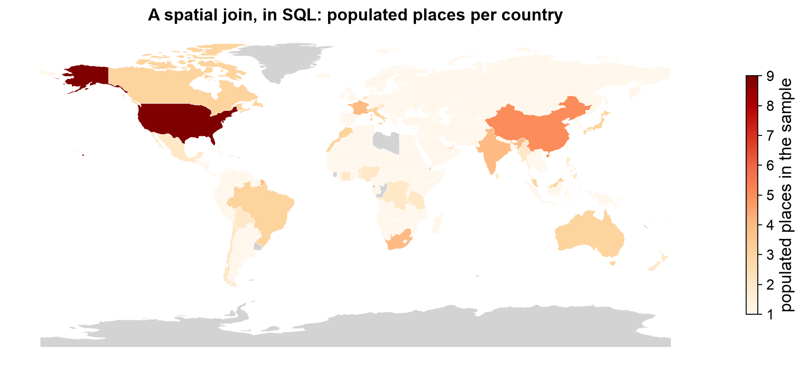
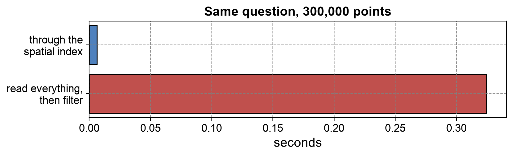

Remark
Please be aware that these lecture notes are accessible online in an ‘early access’ format. They are actively being developed, and certain sections will be further enriched to provide a comprehensive understanding of the subject matter.
3.7. Spatial Database Systems: PostGIS and SpatiaLite#
3.7.1. Learning Objectives#
By the end of this section, you should be able to:
Explain why spatial databases outperform file-based workflows for large, shared, or frequently updated datasets.
Describe how PostGIS extends PostgreSQL with spatial data types, functions, and indexes.
Read a spatial table definition: geometry type, SRID, and geometry column.
Distinguish WKB from WKT,
geometryfromgeography, and explain why polygon layers are often stored asMultiPolygon.Use the main families of spatial SQL functions (measurement, predicates, construction, overlay) and write a spatial join.
Explain how a GiST index speeds up spatial queries, and recognize queries that cannot use it.
Run spatial SQL against a local GeoPackage and a SpatiaLite database, and measure the effect of a spatial index.
Move data between a database and GeoPandas, including detecting and normalizing mixed geometry types before loading.
Describe SpatiaLite as an embedded alternative to PostGIS and choose between the two.
Section Goal
Files are convenient until data gets big, shared, or long-lived. This section explains the alternative: the spatial database. We start with the problem it solves, then build up from the idea (SQL plus geometry), to the machinery (types, functions, indexes), to the practice (connecting from Python and loading data correctly). We finish with SpatiaLite, the lightweight sibling of PostGIS, and a rule for choosing between them.
3.7.2. Why Not Just Use Files?#
File-based workflows (open a GeoPackage or Shapefile in GeoPandas, analyze, save) are excellent for personal analysis. They break down in four predictable ways:
Limitation |
What goes wrong with files |
What a database does instead |
|---|---|---|
Concurrent access |
Two processes writing the same file can corrupt it; a crash mid-write can destroy it. |
Manages many simultaneous readers and writers safely. |
Query pushdown |
To find parcels within 500 m of a school, GeoPandas must load the entire file into memory first, then filter. |
Filters before returning data, using indexes to touch only relevant records. |
Transactional safety |
A half-finished write leaves the file in an unknown state. |
ACID guarantees [Haerder and Reuter, 1983] (Atomicity, Consistency, Isolation, Durability): a change either fully happens or does not happen. |
Scalability |
A 10 GB file cannot be read into RAM for every question. |
Uses indexes, query plans, and caching to work on data far larger than memory. |
The unifying idea is moving computation to the data. With files, you move all the data to your program. With a database, you send a question to the data and receive only the answer. A spatial database is a relational database that also understands geometry, so the “question” can be spatial: which buildings are inside this neighborhood?
3.7.3. The Core Idea: SQL Plus Geometry#
A spatial database does not replace relational thinking; it extends it. A table is still rows and columns, but one column holds a geometry. A spatial SQL query follows the same logic as a pandas workflow:
Choose rows and columns (
SELECT,WHERE).Relate tables (
JOIN).Apply a spatial predicate (
ST_Intersects,ST_Within) to decide which records match.Return results, including a geometry that can be mapped.
The key difference from a non-spatial join is step 3: records are matched by where they are rather than by a shared ID. Filtering, aggregation, and reprojection all happen close to the data, so Python receives a small, ready-to-use result.
Spatial SQL implementations follow the OGC Simple Features standard [Herring, 2011] (points, lines, polygons, and their multi-part versions). This is why function names such as ST_Intersects are consistent across PostGIS, SpatiaLite, and many other systems.
3.7.3.1. A Spatial Database You Can Run Anywhere#
PostGIS needs a running server, which a notebook usually cannot assume. To make the ideas concrete anyway, the demonstrations in this section use two file-based spatial databases built on SQLite: a GeoPackage (which you met earlier in the chapter) and a SpatiaLite database (described at the end of the section). Their SQL engine, reached through GDAL [GDAL/OGR contributors, 2026], uses the same standard ST_ function names as PostGIS, so the queries below are written the way you would write them for PostGIS. Where the two differ, the text says so.
The cell below builds a small spatial database from two public-domain Natural Earth layers [Natural Earth contributors, 2026]: country boundaries (countries) and populated places (places). It defines a helper, sql(), that sends a query to the database engine and returns the result as a table.
Tables in the database: ['countries', 'places']
| countries | places | |
|---|---|---|
| 0 | 177 | 243 |
3.7.4. PostGIS: Spatial Extension for PostgreSQL#
PostgreSQL is a robust open-source relational database. PostGIS [The PostGIS Development Group, 2026] is an extension that turns it into a spatial database management system. It adds three things:
Spatial data types:
geometryandgeography.Spatial functions: hundreds of them, for measuring, testing relationships, constructing, and transforming geometries.
Spatial indexes: GiST indexes that make geographic queries fast.
Because it is an extension, everything you already know about PostgreSQL (users and roles, transactions, backups, replication) still applies. This is a large part of why PostGIS is the dominant open-source choice for enterprise geospatial systems.
3.7.4.1. Anatomy of a Spatial Table#
A PostGIS table looks like an ordinary table with a geometry column:
CREATE TABLE buildings (
gid SERIAL PRIMARY KEY,
name TEXT,
use_type TEXT,
geom GEOMETRY(Polygon, 4326)
);
CREATE INDEX buildings_geom_idx ON buildings USING GIST (geom);
Read the geometry column definition GEOMETRY(Polygon, 4326) as two promises the database enforces:
Geometry type (
Polygon): every row must hold this kind of shape. Other types are rejected.SRID (
4326): every row uses this coordinate reference system.
These promises are why a database is stricter than a file, and why data sometimes must be cleaned before loading (see Getting Data into the Database below).
A typical layer contributes one table per theme. For example, a points table (cities, landmarks) with GEOMETRY(Point, 4326) and a boundaries table (countries, states, counties) with GEOMETRY(MultiPolygon, 4326). Boundary tables are often hierarchical, with columns such as country, state, and county name on the same row. A spatial query can join the two: which county contains each city?
3.7.5. How Geometry Is Stored and Represented#
3.7.5.1. SRID: Which Coordinate System?#
The SRID (Spatial Reference Identifier) is a number that points to a coordinate reference system in PostGIS’s spatial_ref_sys table. Most SRIDs match EPSG codes. SRID 4326 is WGS 84 longitude/latitude in decimal degrees, the system of GPS and most web data.
The SRID matters because it determines what the numbers mean:
It tells PostGIS how to interpret coordinates.
It determines the units of distances and areas. In 4326, units are degrees, so
ST_Distancereturns degrees, which is rarely what you want.It prevents silent errors: PostGIS refuses to combine geometries with different SRIDs.
Use ST_Transform to convert between SRIDs, and ST_SetSRID only to label coordinates whose SRID is missing (it does not move them).
3.7.5.2. WKB and WKT: Two Ways to Write a Geometry#
Geometry can be written in two standard encodings [Herring, 2011]:
Encoding |
Form |
Used for |
|---|---|---|
WKB (Well-Known Binary) |
Long hexadecimal string |
Efficient storage and transfer between software; what you see if you |
WKT (Well-Known Text) |
Readable text such as |
Inspecting, debugging, and exporting; produced with |
Two things to remember about WKT:
Coordinate order is (x y) = (longitude latitude).
POINT(2.2945 48.8584)is the Eiffel Tower in Paris. Swapping the order is one of the most common errors in spatial work.Complex boundaries produce very long output. A coastline polygon may have thousands of vertices, which is why you should select
ST_AsTextonly for small inspections, not entire tables.
WKT : POINT (2.2945 48.8584)
WKB (hex) : 01010000004260E5D0225B024076711B0DE06D4840
Same geometry: True
| name | wkt | |
|---|---|---|
| 0 | Paris | POINT(2.352992 48.858092) |
| country | wkt_characters | |
|---|---|---|
| 0 | Luxembourg | 155 |
| 1 | Canada | 16204 |
A point’s WKB is 21 bytes, shown as 42 hexadecimal characters, while its WKT takes 22 characters, and the two decode to the same geometry. The database writes Paris as POINT(2.352992 48.858092), with no space after POINT and more digits: details of format differ between systems, but the coordinate order does not. Luxembourg’s boundary needs 155 characters of WKT and Canada’s 16,204, about 100 times more, which is why ST_AsText belongs on small inspections only.
3.7.5.3. Why Polygons Are Often MultiPolygons#
A Polygon is one connected area (one outer ring, possibly with holes). A MultiPolygon is a collection of polygons treated as one feature. Administrative regions often need this:
Disconnected parts: Hawaii is one state made of separate islands.
Exclaves and territories: a country may include distant territories.
Holes: enclaves or lakes inside an area.
One row in the table is one administrative unit, even when its geometry has many separate pieces. This is why boundary tables commonly declare the column as MultiPolygon. It is also the root of the loading problem described in Getting Data into the Database below.
The cell below shows the effect with real data. The source layer holds both types, but the database table declares a single geometry type, so every country is stored as a MultiPolygon.
Geometry types in the source layer: {'Polygon': 148, 'MultiPolygon': 29}
| stored_as | countries | |
|---|---|---|
| 0 | MULTIPOLYGON | 177 |
3.7.5.4. geometry vs. geography#
Type |
Model |
Distance units |
Best for |
|---|---|---|---|
|
Flat plane in the chosen CRS |
Units of the CRS (meters in UTM) |
Local and regional analysis; full function library; fastest. |
|
Spheroid (WGS 84) |
Always meters, along the curved surface |
Global data, long distances, flight paths, ocean routes. |
Rule of thumb: for local and regional work, store geometry in a suitable projected CRS (such as UTM) so measurements are in meters. Use geography when the curvature of the Earth matters more than convenience.
3.7.6. Spatial SQL Functions#
Hundreds of functions exist; they fall into a few families. Learning the families is more useful than memorizing names.
3.7.6.1. Measurement#
These return numbers. They give correct units only if the geometry is in a suitable CRS.
SELECT name, ST_Length(geom) AS length_m FROM roads; -- line length
SELECT name, ST_Area(geom) / 1e6 AS km2 FROM parks; -- polygon area
SELECT ST_Distance(a.geom, b.geom) AS dist_m
FROM schools a, hospitals b WHERE a.gid = 1 AND b.gid = 42; -- shortest distance
| country | area_square_degrees | area_km2 | |
|---|---|---|---|
| 0 | Canada | 1712.995231 | 10037729.0 |
| 1 | Russia | 2935.205200 | 17020588.0 |
| 2 | Luxembourg | 0.301516 | 2416.0 |
The first column is the area on the raw longitude-latitude geometry, in square degrees, which is not a usable area (and would mean very different ground areas at different latitudes). The second column reprojects to an equal-area coordinate system (EPSG:6933) first and divides by one million, giving square kilometers. This is the SRID rule from the start of the section, in action: the CRS decides the units. One square degree covers about 8,000 km² at Luxembourg’s latitude but only about 5,800 to 5,900 km² for Canada and Russia, so even the conversion between the two columns is not constant. (The generalized 1:110 million boundaries also leave small countries a few percent below official figures.)
3.7.6.2. Spatial Predicates (TRUE/FALSE Relationships)#
Predicates test how two geometries relate. They are the heart of spatial filtering and joining.
Function |
TRUE when |
Typical use |
|---|---|---|
|
A and B share any space |
General “do these overlap or touch?” test |
|
A is completely inside B |
Points inside polygons |
|
A completely contains B (the reverse of |
Polygons holding points |
|
A and B share no space |
Finding separate features |
|
Boundaries meet, interiors do not |
Adjacent features |
|
Partial overlap, neither contains the other |
Partial coverage |
|
Geometries cross |
Roads crossing a boundary |
|
Same shape |
Duplicate detection |
|
A and B are within distance |
Proximity searches |
Two practical points:
ST_Withinis false for a point lying exactly on a polygon’s edge. If boundaries matter, considerST_Covers/ST_CoveredBy.For proximity, prefer
ST_DWithin(a, b, 500)overST_Distance(a, b) < 500. Both give the same answer, but onlyST_DWithincan use the spatial index (see Spatial Indexes below). Over a large table the difference can be minutes versus milliseconds.
3.7.6.3. Construction and Transformation#
These create new geometries from existing ones.
SELECT gid, ST_Buffer(geom, 500) FROM schools; -- 500 m zone (needs a metric CRS)
SELECT ST_Union(geom) AS merged_parks FROM parks; -- dissolve many into one
SELECT gid, ST_Centroid(geom) FROM census_tracts; -- one representative point
SELECT gid, ST_Transform(geom, 32615) FROM features; -- reproject to UTM 15N
A buffer of 500 means 500 CRS units. In SRID 4326 that would be 500 degrees, which is meaningless. Reproject first, or use geography.
3.7.6.4. Overlay#
Overlay functions combine two layers geometrically: ST_Intersection (the area in both), ST_Difference (the part of A not covered by B), ST_Union, and ST_SymDifference. They work on pairs of geometries, so always join the layers with a predicate first:
SELECT ST_Intersection(a.geom, b.geom) AS overlap_geom
FROM layer_a a JOIN layer_b b ON ST_Intersects(a.geom, b.geom);
Without the join condition, the database tries every pair of features, which is slow and usually not what you want.
3.7.6.5. The Spatial Join#
A spatial join matches rows from two tables because of their spatial relationship rather than a shared key. This single pattern answers a huge share of GIS questions:
-- Which country contains each city? (European cities, largest first)
SELECT p.name AS city, p.pop_max AS population, c.name AS country
FROM places p
JOIN countries c ON ST_Within(p.geom, c.geom)
WHERE c.continent = 'Europe'
ORDER BY p.pop_max DESC;
Read it in words: “for each place, find the country that contains it, keep only countries in Europe, and list cities largest first.” The result combines point attributes (city, population) with polygon attributes (country) without any ID linking the two tables. The cells below run this very query.
| city | population | country | |
|---|---|---|---|
| 0 | Moscow | 10452000 | Russia |
| 1 | Paris | 9904000 | France |
| 2 | London | 8567000 | United Kingdom |
| 3 | Madrid | 5567000 | Spain |
| 4 | Berlin | 3406000 | Germany |
| 5 | Rome | 3339000 | Italy |
| 6 | Athens | 3242000 | Greece |
| 7 | Lisbon | 2812000 | Portugal |
A small change turns the same join into an aggregation: group by the polygon and count the points. The cell below counts populated places per country in SQL, checks the result against the equivalent GeoPandas spatial join (sjoin), and maps the counts. Countries with no place in this sample appear in gray.
SQL and GeoPandas agree: True
Most places: [{'country': 'United States of America', 'places': 9}, {'country': 'China', 'places': 5}, {'country': 'France', 'places': 4}]


Fig. 3.24 Populated places per country from a spatial join; countries with no matched place are gray.#
In Fig. 3.24, the United States leads with nine places, followed by China with five and a group of countries with four (the SpatiaLite run below lists France, South Africa, and India); most countries have one or two. Greenland, Antarctica, Libya, and a few others are gray because the join matched no place to them. The counts reflect how the 243-place sample was selected, not how many places each country really has.
3.7.7. Spatial Indexes#
3.7.7.1. The Problem#
Without an index, a spatial query checks every row: cost grows in proportion to table size. Exact geometric tests on complex polygons are expensive, so scanning millions of rows is impractical.
3.7.7.2. The Solution: Filter First, Test Second#
A GiST (Generalized Search Tree) index stores the bounding box (minimum enclosing rectangle) of each geometry in a tree structure similar to an R-tree [Guttman, 1984]. A query then proceeds in two steps:
Filter: use the index to quickly find geometries whose bounding boxes overlap the query area. This is cheap and discards almost everything.
Refine: run the exact (expensive) geometric test only on the few remaining candidates.
The analogy is a library: you go to the right shelf first, then check individual books, instead of opening every book in the building.
GeoPackage and SpatiaLite use the same idea with an R-tree index, which is why a GeoPackage can answer a bounding-box request without reading the whole table. The cell below measures the effect on a synthetic table of 300,000 random points: it reads a small window once through the index, and once by reading everything and filtering in Python. Timings vary by machine, but the pattern does not.
Points in the window: 49 (index) vs 49 (scan): same answer: True
Through the spatial index : 0.006 s
Read everything, then filter: 0.325 s (about 51 times slower)
The R-tree index table holds 300,000 entries, one per point


Fig. 3.25 Time to read a half-degree window from a table of 300,000 points, with and without the spatial index (one run; timings vary by machine).#
The window in Fig. 3.25 holds 49 of the 300,000 points. Through the index the read took 0.006 s; reading everything and filtering in Python took 0.307 s, about 49 times slower in this run, with an identical answer. The R-tree table holds one entry per point, which is what lets the engine skip all but a handful of rows. The gap widens as tables grow, because a full scan’s cost rises in step with the number of rows while an index lookup’s rises much more slowly.
3.7.7.3. Using Indexes Well#
CREATE INDEX parcels_geom_idx ON parcels USING GIST (geom);
VACUUM ANALYZE parcels;
Create the index after bulk loading, so it is built once instead of updated row by row.
Run
VACUUM ANALYZEso the query planner has up-to-date statistics.Use index-aware functions.
ST_Intersects,ST_Within,ST_Contains, andST_DWithininclude the bounding-box filter automatically.ST_Distance(...) < xin aWHEREclause does not.Check, don’t assume. Prefix a slow query with
EXPLAIN (ANALYZE, BUFFERS)to see whether the planner used the index. On tiny tables the planner may legitimately skip it.
An index can turn a query that takes minutes on a million rows into one that takes milliseconds, so build one on every geometry column you query.
3.7.8. Working with PostGIS from Python#
Python is typically the analysis and visualization layer; the database is the storage and heavy-filtering layer. Several tools connect them:
Tool |
Role |
|---|---|
|
Low-level PostgreSQL driver: opens connections and runs SQL. |
|
Creates an engine that manages connections; the interface GeoPandas uses. |
|
|
|
Optional: spatial types for SQLAlchemy’s object-relational mapping. |
A typical analysis loop has four steps:
Connect to the database.
Write a SQL query that does the filtering, joining, and aggregation, and returns a geometry column.
Load the result into a GeoDataFrame with
read_postgis(), naming the geometry column.Plot or analyze it with the Python tools you already know.
The design principle is do the heavy lifting in SQL, the finishing in Python. A query that filters one state out of a national table should be filtered in the database, not after downloading everything. Remember that a geometry column read as WKB needs read_postgis() (or a conversion) to become usable shapes.
The pattern looks like this. It is shown as text, not run, because it needs a PostGIS server; credentials come from the environment, and the continent is passed as a parameter instead of being pasted into the SQL:
import os
import geopandas as gpd
from sqlalchemy import create_engine, text
engine = create_engine(os.environ["POSTGIS_URL"]) # never write the password in the notebook
query = text("""
SELECT p.name, p.pop_max, c.name AS country, p.geom
FROM places p JOIN countries c ON ST_Within(p.geom, c.geom)
WHERE c.continent = :continent
""")
europe = gpd.read_postgis(query, engine, geom_col="geom", params={"continent": "Europe"})
europe.to_postgis("europe_places", engine, if_exists="replace") # and back again
engine.dispose()
3.7.8.1. Safe Connection Practices#
Keep credentials out of notebooks and scripts: use environment variables, a
.pgpassfile, or a secret manager.Never build SQL by concatenating text from users; use parameterized queries for values.
Prefer a read-only database role for analysis, so exploration cannot damage shared data.
Close connections and dispose of engines when finished to release server resources.
3.7.9. Getting Data into the Database#
3.7.9.1. Basic Loading Path#
The standard loading workflow is:
Read the source file with GeoPandas [Jordahl et al., 2020].
Reproject to the CRS you intend to use for analysis (usually a projected CRS).
Write it to the database with
to_postgis().
For large datasets, the GDAL command-line tool ogr2ogr [GDAL/OGR contributors, 2026] is faster and can reproject during loading with its -t_srs option. Its -nlt PROMOTE_TO_MULTI option also performs the geometry-type normalization described below:
ogr2ogr -f PostgreSQL PG:"dbname=gis" countries.gpkg countries \
-nln countries -t_srs EPSG:4326 -nlt PROMOTE_TO_MULTI
3.7.9.2. The Mixed Geometry Type Problem#
Recall from Anatomy of a Spatial Table that a spatial column declares one geometry type. File sources do not always cooperate. The country boundaries used in the GML section earlier in this chapter are an example: 148 features are Polygon and 29 are MultiPolygon (countries made of islands or separate parts). Loading such a layer into a Polygon column fails or loses information, and in the format-conversion experiment a File Geodatabase refused the layer outright. The mix must be resolved before loading.
Step 1: Detect. Count geometry types in the layer (in GeoPandas, gdf.geometry.type.value_counts()). A result such as 148 Polygon and 29 MultiPolygon signals the problem.
Step 2: Normalize to the more general type. Wrap each single Polygon in a one-member MultiPolygon. Now the whole column is homogeneous, and nothing is lost.
Step 3: Declare a matching column. If you create the table yourself rather than letting GeoPandas infer it, state the type explicitly:
SELECT AddGeometryColumn('public', 'countries', 'geom', 4326, 'MULTIPOLYGON', 2);
Step 4: Load. Append the normalized data. Make sure the GeoDataFrame’s geometry column name matches the table’s geometry column (here geom), or the load will not populate it.
Why normalize up rather than down? Converting every MultiPolygon to a Polygon would force you to choose one part per feature and silently discard the rest. Wrapping a Polygon into a MultiPolygon is lossless. The general rule: always convert toward the more inclusive type.
3.7.9.3. Database Readiness Checklist#
Before loading a layer, confirm:
the geometry column and geometry type are explicit;
all records use the intended CRS and units;
invalid and empty geometries are handled;
mixed geometry types are normalized;
a stable primary key exists;
spatial indexes will be created after bulk loading; and
the source, transformation, and load date are recorded.
3.7.9.4. Loading Best Practices#
Verify the CRS before loading. Reprojecting after the fact is possible but costs time.
Validate geometry. Repair invalid shapes (self-intersections, unclosed rings) with
ST_MakeValid()in SQL ormake_valid()in Shapely. Thebuffer(0)trick works for simple cases but can alter or drop parts of a shape, so inspect the result.Normalize geometry types so the column can declare one type.
Create spatial indexes after bulk loading.
Run
VACUUM ANALYZEafter large inserts.Close connections explicitly.
3.7.10. SpatiaLite: A Spatial Database in a Single File#
SpatiaLite [Furieri, 2023] is a spatial extension for SQLite, the lightweight embedded database. Where PostGIS needs a running server, a SpatiaLite database is a single .sqlite file that any program can open directly. There are no users to configure and nothing to install on a server.
SpatiaLite supports most of the same spatial SQL (ST_Buffer, ST_Intersects, ST_Distance, and so on), so the concepts from the earlier parts of this section (geometry, spatial SQL, and indexes) transfer directly. A few differences are worth knowing:
The extension must be loaded into each connection, and spatial metadata tables are initialized once per new database.
Spatial indexes are explicit: you request an R-Tree index for a geometry column, rather than a GiST index.
Concurrency is limited. Many readers are fine, but heavy simultaneous writing is not what SQLite is designed for.
Because GeoPandas reads SQLite and GeoPackage files through GDAL, you can move between embedded databases and your analysis code without changing the analysis itself.
To see one, the next cell writes the same two layers into a SpatiaLite database and opens the file with plain sqlite3. Compare its tables with the GeoPackage tables you listed earlier in the chapter: the metadata tables have different names (geometry_columns, spatial_ref_sys), and each spatial index is a set of idx_ tables.
Layer tables (2):
countries, places
Spatial index tables (8):
idx_countries_GEOMETRY, idx_countries_GEOMETRY_node, idx_countries_GEOMETRY_parent, idx_countries_GEOMETRY_rowid, idx_places_GEOMETRY, idx_places_GEOMETRY_node, idx_places_GEOMETRY_parent, idx_places_GEOMETRY_rowid
SpatiaLite metadata and system tables (22):
ElementaryGeometries, KNN2, SpatialIndex, data_licenses, geometry_columns, geometry_columns_auth, geometry_columns_field_infos, geometry_columns_statistics, geometry_columns_time, spatial_ref_sys, spatial_ref_sys_aux, spatialite_history, sql_statements_log, sqlite_sequence, views_geometry_columns, views_geometry_columns_auth, views_geometry_columns_field_infos, views_geometry_columns_statistics, virts_geometry_columns, virts_geometry_columns_auth, virts_geometry_columns_field_infos, virts_geometry_columns_statistics
| f_table_name | f_geometry_column | srid | spatial_index_enabled | |
|---|---|---|---|---|
| 0 | countries | geometry | 4326 | 1 |
| 1 | places | geometry | 4326 | 1 |
The two layers are outnumbered by 30 support tables: 8 spatial-index tables, the same four-table R-tree structure for each layer that the GeoPackage used earlier in the chapter, and 22 SpatiaLite metadata and system tables. geometry_columns records SRID 4326 and spatial_index_enabled = 1 for both layers.
The same spatial join runs in this database unchanged in spirit; only the geometry column is called GEOMETRY here instead of geom, a reminder that table layout is a convention each system sets for itself.
| country | places | |
|---|---|---|
| 0 | United States of America | 9 |
| 1 | China | 5 |
| 2 | South Africa | 4 |
| 3 | India | 4 |
| 4 | France | 4 |
The join gives the same top two (United States with 9, China with 5), but three countries tie at 4: South Africa, India, and France. Ties have no defined order, which is why France appeared third earlier. Add a second sort key, such as c.NAME, whenever a ranking must be reproducible.
Relationship to GeoPackage. A GeoPackage (.gpkg) is also an SQLite file, standardized by the OGC [Open Geospatial Consortium, 2023] for storing vector data. It is the best choice for exchanging a self-contained dataset; SpatiaLite is the choice when you want its fuller set of spatial SQL functions inside the database.
3.7.11. Choosing Between PostGIS and SpatiaLite#
SpatiaLite |
PostGIS |
|
|---|---|---|
Architecture |
Embedded, single file |
Client–server |
Users |
One at a time |
Many, concurrent |
Setup |
None |
Server installation and administration |
Portability |
Copy the file (email, USB) |
Dump and restore, or connect remotely |
Security |
File permissions |
Roles, permissions, access control |
Scale |
Personal analysis, prototypes |
Enterprise, hundreds of millions of features |
Typical use |
Notebooks, mobile/desktop apps, shared datasets |
Web services, production pipelines, shared institutional data |
Decision Rule
Use SpatiaLite (or GeoPackage) when you need a portable, single-file spatial database for personal analysis, prototyping, or distributing a self-contained dataset.
Use PostGIS when you need multi-user access, ACID transactions, role-based access control, replication, or the ability to handle very large datasets.
A common pattern: prototype in SpatiaLite or GeoPackage, then move to PostGIS when the project grows. Because both use standard spatial SQL, most queries survive the move.
Practice
Using the world.gpkg database from this section, write a spatial SQL query that lists the five countries containing the most populated places, and another that returns each country’s area in square kilometers after reprojecting to EPSG:6933. Then draw a bounding-box window of your own choosing over the 300,000-point table, and report how much faster the indexed read is than reading everything. Finally, write two sentences on whether you would use PostGIS or SpatiaLite for a dataset that five analysts edit daily, and why.
3.7.12. Key Terms#
Term |
Meaning |
|---|---|
Spatial database |
A relational database with geometry types, spatial functions, and spatial indexes. |
PostGIS |
Spatial extension for PostgreSQL (server-based). |
SpatiaLite |
Spatial extension for SQLite (embedded, file-based). |
SRID |
Number identifying a coordinate reference system (4326 = WGS 84 lon/lat). |
WKB / WKT |
Binary / text encodings of geometry. |
MultiPolygon |
One feature composed of several polygons. |
Spatial predicate |
A function returning TRUE/FALSE about how two geometries relate. |
Spatial join |
Joining tables by spatial relationship instead of a shared key. |
GiST index |
Tree index on bounding boxes for fast spatial filtering. |
ACID |
Atomicity, Consistency, Isolation, Durability: guarantees of safe transactions. |
3.7.13. Review Questions#
Give three reasons why a file-based workflow fails for a 20 GB layer edited by five analysts.
What two promises does
GEOMETRY(MultiPolygon, 4326)make about a column?Why does
ST_Buffer(geom, 500)give meaningless results on data in SRID 4326, and how would you fix it?Why is
ST_DWithin(a, b, 500)preferable toST_Distance(a, b) < 500on a large table?A layer has 148
Polygonand 29MultiPolygonfeatures. Which type should the database column use, and why not the other?You are building a portable dataset to hand to a collaborator with no database server. Which system would you choose?
3.7.14. Summary#
Spatial databases extend the relational model so that geometry is a first-class data type. They move computation to the data, keep shared datasets consistent and safe, and scale far beyond what a file loaded into memory can handle. PostGIS adds spatial types, a large function library, and GiST indexes to PostgreSQL for multi-user, production-grade work. SpatiaLite offers the same spatial SQL in a portable single file. Three ideas carry most of the practical weight: store data in a CRS appropriate for the measurements you need, write queries that can use the spatial index, and make geometry types consistent before loading. Python and GeoPandas then serve as the analysis and visualization layer on top.
The final section of the chapter turns from infrastructure to workflow: it walks through a complete geospatial ETL pipeline from raw download to an analysis-ready, database-loaded layer, together with the licensing and governance questions that come with data you did not create.